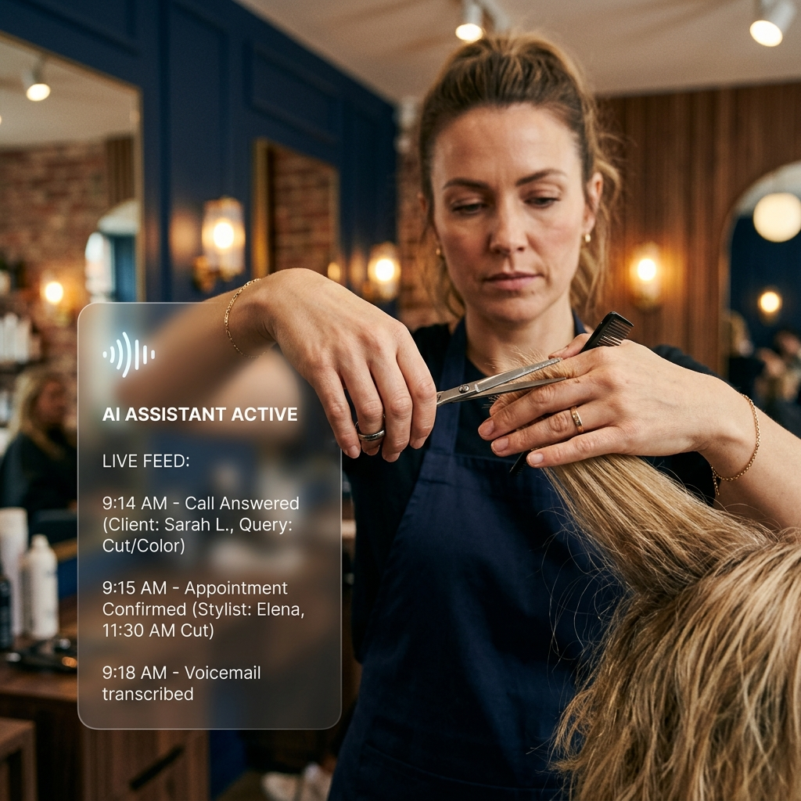

L’IA au service de votre Accueil Téléphonique.
Libérez votre équipe du téléphone. L'IA vocale prend vos réservations, répond aux questions courantes et transfère les urgences. Concentrez-vous sur vos clients face-à-face. Consultez notre guide IA 2026 pour PME →

Le Constat
Le standard téléphonique : un frein à votre croissance
Jusqu'à 3h perdues d'interruptions
La gestion manuelle du standard avec des moyennes de 120 appels quotidiens monopolise facilement 3 heures de temps de vos équipes. Ces interruptions détériorent la concentration et favorisent le risque de burn-out des secrétaires.
72% de perte vers la concurrence
Pendant un coup de feu ou une consultation, une sonnerie dans le vide est fatale. En cas de non-décroché, 72% à 80% des clients ne rappellent pas et contactent immédiatement un concurrent direct. Le manque à gagner est immédiat.
Les répercussions des No-Shows
Les rendez-vous virtuels non honorés constituent une perte structurelle et plombent l'optimisation des agendas. Un répondeur IA qui automatise les rappels et accepte les acomptes diminue drastiquement ces cas d'absentéisme.
Mise en Pratique
Un Assistant Vocal IA à Haute Performance
Secrétariat Médical et Santé
L'IA vocale offre un taux de décroché de 100% pour vos patients. Elle identifie les priorités ou urgences réelles et parvient à automatiser jusqu'à 90% des réservations classiques (synchronisation API avec Rosa ou Doctoranytime).
Salons de Coiffure & Beauté
Les stylistes ne s'arrêtent plus de prodiguer un soin. Votre répondeur intelligent comprend les demandes spécifiques, propose l'expert adéquat via le logiciel (ex: Planity) et envoie des SMS transactionnels pour prévenir les oublis.
Horeca & Restauration Belge
La voix automatisée gère de 80% à 90% des appels entrants de façon autonome via TheFork ou Zenchef. Surtout, environ 25% de vos tables sont captées et planifiées hors des heures d'ouverture (souvent la nuit).
Les Avantages
Pourquoi l'IA Vocale s'impose en Belgique
1. Le Multilinguisme Natif (FR/NL/EN)
Face à la pénurie de profils bilingues, l'IA bascule fluidement entre le français, le néerlandais et l'anglais. Accueillez chaque client dans sa langue maternelle de manière irréprochable et évitez les lourdeurs de recrutement.
2. Contrer la Charge Structurelle
Le coût du travail est significatif en Belgique. Un assistant vocal divise le coût de traitement par appel par cinq. Offrez-vous un standard de très haute qualité, tout en vous affranchissant des fluctuations RH (maladies, congés).
3. Disponibilité 24/7 (Zéro Mise en Attente)
Manquer un appel équivaut à perdre une opportunité. L'IA garantit l'abolition des files d'attente (jusqu'à 100 appels simultanés) et planifie de nuit. Libérez le temps de l'équipe humaine pour les cas complexes.
4. Intégration Native aux Outils Belges
Aucune double saisie : notre IA se connecte par API aux logiciels dominants. Elle interroge Rosa ou Doctoranytime en santé, Zenchef en Horeca, ou synchronise directement Odoo pour vos processus métiers internes.
Conformité RGPD et Intégration Native.
L'agent interagit de manière complètement sécurisée. Les historiques d'appels et transcriptions ne sont accessibles que par le gérant. L'architecture se greffe par API certifiée sur les agendas métiers existants, garantissant une protection hermétique des informations client ou patient.
Libérez vos équipes dès aujourd'hui
Passez un appel test avec notre agent vocal et mesurons ensemble l'impact pour votre structure. Prenez rendez-vous pour un échange téléphonique de 30 minutes, 100% gratuit.
Planifier l'Audit Téléphonique